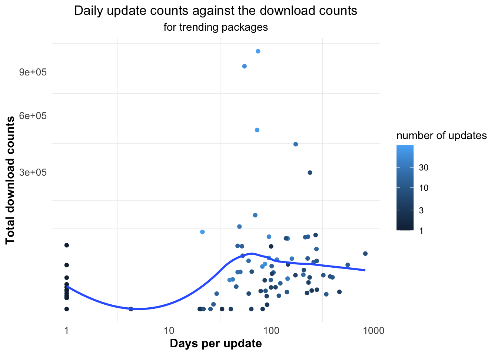
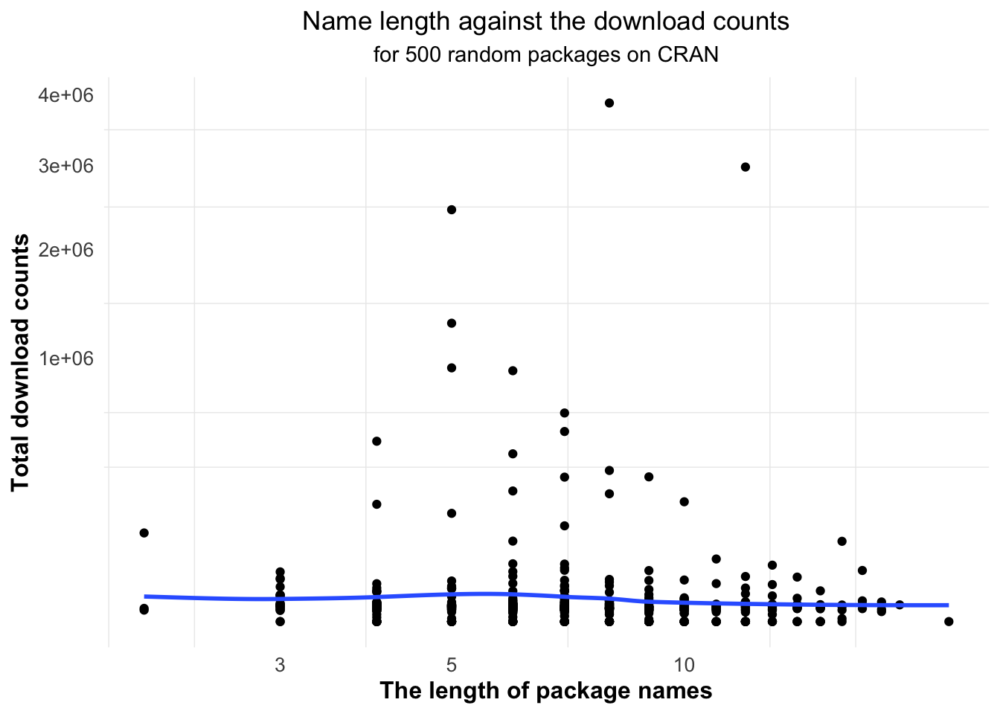
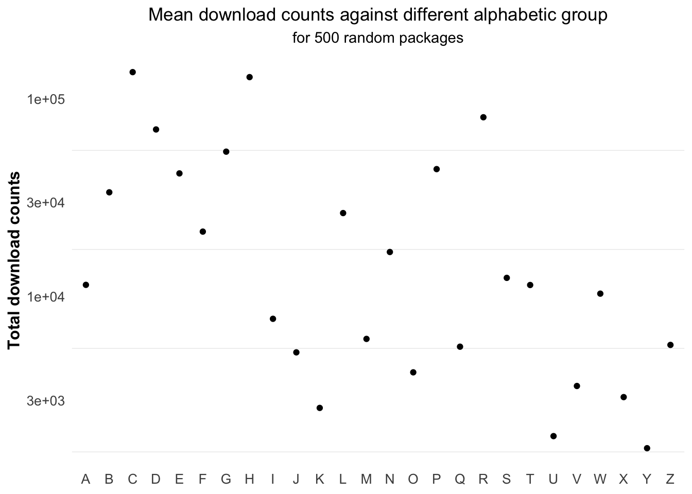

Chapter 2 Analysis
2.1 General daily download trend of all packages
First, let’s take a look at the daily downloads of all packages on CRAN from 2019-01-01 to 2021-04-01. Figure 2.1 shows the pattern, and the yellow areas highlight the weekend.We could know that there seems to have strong seasonality, which indicates that in a week, the total downloads always increases first then decreases, and reaches the lowest at the weekend. What’s more, the downloads is on the rise from August to October and from February to April, which may be due to the start of semester for most universities.
Figure 2.1: Generally, the total downloads of all packages on CRAN would decrease on weekends.
2.2 Daily top 15 downloaded packages
We all know that some packages are hold by rstudio, or they are developed by some core personnel or related personnel under R, or some prolific developers. Naturally, the number of downloads of these packages will be higher. (explain why??) And the existence of these packages will make the results biased. Therefore, in order to explore the interesting findings for packages constructed by non-special creators, I have screened out four types of packages, namely: - Packages maintained by R studio - Packages created by authors from R core group - Packages created by authors from R secondary group - Packages created by R related authors - Packages created by top 20 prolific maintainers (explain the recource)
Then, I compared the top 15 downloaded packages April 1 from 2013 to 2021 to see how user preferences has been changing.
Table 2.1 shows the packages that newly come up to the top 15 list each year, from which we can know what the user preferences increase year by year compared with the previous year.
| package14_13 | package15_14 | package16_15 | package17_16 | package18_17 | package19_18 | package20_19 | package21_20 |
|---|---|---|---|---|---|---|---|
| ncdf | XLConnectJars | reports | lava.tobit | ReporteRs | CALIBERrfimpute | SparkR | heatmap.plus |
| playwith | KoNLP | moonsun | rggobi | ReporteRsjars | replyr | ENmisc | lazyrmd |
| DMwR | doRedis | rPython | alr3 | gWidgetsRGtk2 | zipcode | CoxBoost | robcp |
| latticist | ElemStatLearn | rmongodb | tnam | d3heatmap | rmosek | gWidgetstcltk | targets |
| bstats | testthatsomemore | maxent | SweaveListingUtils | pbdDMAT | msgpack | citr | swissdd |
| geoRglm | adehabitat | SDMTools | ElemStatLearn |
|
|
EMMIXskew | countyweather |
| reports | wmtsa | MSBVAR | zipcode |
|
|
RcmdrPlugin.mosaic | SoupX |
|
|
mixOmics | d3heatmap |
|
|
|
RcmdrPlugin.qual | SpatialKWD |
|
|
DatABEL | ReporteRs |
|
|
|
packagedocs | spread |
|
|
|
|
|
|
|
|
tarchetypes |
|
|
|
|
|
|
|
|
YuGene |
|
|
|
|
|
|
|
|
dataverse |
|
|
|
|
|
|
|
|
deepdep |
Table 2.2 shows the packages that remain unchanged each year compared with the previous year, from which we can know which packages are relatively stable in popularity.
| package14_13 | package15_14 | package16_15 | package17_16 | package18_17 | package19_18 | package20_19 | package21_20 |
|---|---|---|---|---|---|---|---|
| Defaults | ncdf | XLConnectJars | XLConnectJars | XLConnectJars | XLConnectJars | DMwR | packagedocs |
| RSQLite.extfuns | epicalc | KoNLP | KoNLP | DMwR | KoNLP | gWidgets | DMwR |
| gWidgetsRGtk2 | gWidgets | DMwR | DMwR | KoNLP | DMwR | d3heatmap |
|
| gWidgets | gWidgetsRGtk2 | gWidgets | reports | SDMTools | SDMTools | alr3 |
|
| alr3 | DMwR | mixOmics | maxent | reports | gWidgets | gWidgetsRGtk2 |
|
| epicalc | alr3 | gWidgetsRGtk2 | SDMTools | mixOmics | ElemStatLearn | reports |
|
| rggobi |
|
|
mixOmics | ElemStatLearn | reports |
|
|
| its |
|
|
gWidgets | alr3 | gWidgetsRGtk2 |
|
|
|
|
|
|
|
maxent | d3heatmap |
|
|
|
|
|
|
|
gWidgets | alr3 |
|
|
## [1] package topic
## <0 rows> (or 0-length row.names)Let’s take a look at the trending packages. Trending packages are packages that downloaded at least 1000 times last week, which have increased significantly compared to the average weekly downloads in the previous 24 weeks(R-Hub, n.d.). That is to say, they are packages with high download volume in a recent short time. Through their topic, we can know what areas of packages people are concerned about recently. As the trending packages are changing through time, let’s focus on trending ones before 2021-04-11.
Table 2.3 shows the first 15 trending packages along with their topics.
| package | topic |
|---|---|
| bnlearn | Bayesian |
| pointblank | Databases |
| clubSandwich | Econometrics |
| tsDyn | Econometrics |
| tseries | Econometrics |
| gamair | Environmetrics |
| tseries | Environmetrics |
| tsDyn | Finance |
| tseries | Finance |
| tseriesChaos | Finance |
| phangorn | Genetics |
| misc3d | Graphics |
| rgl | Graphics |
| vioplot | Graphics |
| bnlearn | HighPerformanceComputing |
And Table 2.4 shows the first 10 topics for trending packages. The most popular topic is TimeSeries, followed by Survival and WebTechnologies. This is easy to understand, because the number of people in different fields is different, so there are also differences in the number of packages used in different topics.
| topic | n |
|---|---|
| TimeSeries | 5 |
| Survival | 4 |
| WebTechnologies | 4 |
| Econometrics | 3 |
| Finance | 3 |
| Graphics | 3 |
| Multivariate | 3 |
| Spatial | 3 |
| Environmetrics | 2 |
| ModelDeployment | 2 |
So, apart from the topic of the package itself, what other factors will affect its download volume? With this problem in mind, I mainly explored the relationship between the total number of download counts of packages in the past half a year and the earliest release date, the number of updates, the number of commits on GitHub repositories, the length of the name and the alphabetic order of the first letter of the name.
2.3 Compare last half year’s downloads with the earliest release date
In our common cognition, we think that the earlier a package is released, the more people will know about it, and thus the more downloads it will have. However, packages related to different topics cannot be directly compared, because it is possible that the total download amount of packages in a certain topic is higher than that in another topic. Therefore, in order to test this conjecture as clearly as possible, I selected three domain packages through CRAN task view, calculated their respective downloads in the previous half a year, and found their earliest release dates for comparison.
- Packages for Time Series Analysis
The first topic is Time Series Analysis. Time Series Analysis is a statistical technique that deals with time series data, or trend analysis. Time series data means that data is in a series of particular time periods or intervals(“Time Series Analysis” 2020).
| package | count | update |
|---|---|---|
| lubridate | 3656524 | 2010-08-15 |
| data.table | 3404770 | 2006-04-15 |
| zoo | 3349959 | 2004-02-20 |
| xts | 1546495 | 2008-01-05 |
| forecast | 1143270 | 2009-09-07 |
| tseries | 1061840 | 1999-07-09 |
| urca | 782244 | 2004-03-16 |
| fracdiff | 774583 | 1999-05-19 |
| timeDate | 769279 | 2008-10-23 |
| strucchange | 637970 | 2001-05-17 |
| boot | 468204 | 1999-04-08 |
| chron | 338562 | 1999-04-10 |
| dygraphs | 244579 | 2014-12-23 |
| timeSeries | 201575 | 2008-10-23 |
| AER | 197279 | 2008-05-05 |
Table 2.5 shows the first 15 timeseries packages along with their earliest release date and last half year’s total counts. It can be seen that lubridate ranks first on download count with release date 2010-08-15. Except that, other first four packages are all released before 2010, which is over 10 years ago.
Figure 2.2 displays the scatterplot of the last half year’s download count and the earliest release date of timeseries packages. It can be seen that generally, as the earliest release date gets later and later, the number of download logs becomes lower and lower. And most of the high downloaded packages are from a period of time between 2004 and 2011. For timeseries packages, they are mainly released between 2012 and 2019.

Figure 2.2: The older package ‘fable’ has less download count than that of package ‘forecast.’
- Bayesian packages for general model fitting
The second topic is Bayesian Inference. Bayesian statistics is a mathematical procedure that applies probabilities to statistical problems. It provides people the tools to update their beliefs in the evidence of new data(perpetual 2019).
| package | count | update |
|---|---|---|
| Hmisc | 1843103 | 2003-07-17 |
| coda | 663835 | 1999-06-04 |
| mgcv | 619427 | 2000-10-04 |
| rstan | 413330 | 2015-07-18 |
| loo | 345666 | 2015-06-26 |
| arm | 248276 | 2007-01-01 |
| arm | 248276 | 2007-01-01 |
| arm | 248276 | 2007-01-01 |
| arm | 248276 | 2007-01-01 |
| sna | 147831 | 2001-05-28 |
| LearnBayes | 139044 | 2007-05-03 |
| Boom | 136788 | 2014-06-21 |
| bsts | 136381 | 2014-06-27 |
| bayesm | 135790 | 2004-05-19 |
| bayestestR | 132395 | 2019-04-08 |
Table 2.6 shows the first 15 econometric packages along with their earliest release date and last half year’s total counts. It can be seen that the first-rank package is Hmisc released on 2003-07-17. All the top 3 packages are released before 2005, and all the top 10 packages comes before 2010.
It can be seen from Figure 2.3 that similarly, the earlier packages is released, the more downloads it will have. And most of the packages are from 2007 to 2012.

Figure 2.3: last two years’ downloads with the release date for bayesian general model fitting packages.
- Econometrics
In order to test whether this is the case in other areas, let’s turn our attention to econometrics packages. Econometrics is the use of statistical methods using quantitative data to develop theories or test existing hypotheses in economics or finance, which relies on techniques such as regression models and null hypothesis testing(Hayes 2020).
| package | count | update |
|---|---|---|
| zoo | 3349959 | 2004-02-20 |
| Hmisc | 1843103 | 2003-07-17 |
| lme4 | 1600499 | 2003-06-25 |
| xts | 1546495 | 2008-01-05 |
| lmtest | 1473118 | 1999-03-15 |
| car | 1447008 | 2001-05-01 |
| sandwich | 1285605 | 2004-02-20 |
| quantreg | 1204208 | 1999-01-11 |
| forecast | 1143270 | 2009-09-07 |
| SparseM | 1134864 | 2002-10-20 |
| tseries | 1061840 | 1999-07-09 |
| MASS | 835586 | 2009-05-08 |
| urca | 782244 | 2004-03-16 |
| nlme | 780873 | 1999-11-23 |
| survival | 737926 | 2001-06-22 |
Table 2.7 shows the first 15 econometric packages along with their earliest release date and last half year’s total counts. It can be seen that the first-rank package is zoo released on 2004-02-20. All the top 3 packages are released before 2005, and all the top 10 packages comes before 2010.
In Figure 2.4, as we can see, for this kind of package, the download volume decreases more obviously with the release date, which is quite consistent with both timeseries and bayesian situations. And most of the packages are centered between 2013 and 2016.

Figure 2.4: The latest package sandwich has the highest downloads.
In conclusion, I’m not surprised to find that the earlier the package is released, the more downloads it will has, which is reflected in bayesian, econometrics, time series cases. That is because,t he packages released earlier will be better known. When they are released early, there may be a relatively small number of packages of the same type, so the competition is relatively small. In contrast, the packages released later can easily be covered up, because people tend to use the well-known, mature and habitual packages.
2.4 compare packages with similar release date
I would like to compare packages released on the same date (i.e. April 1st, 2021), so I compare the daily downloads of these packages for 04-02.
By looking into Figure ??, we could know that the most downloaded package released on 04-01 is datetimeutils, and the second one is berryFunctions.
2.5 Compare moving average of fable and forecast
Let’s have a look at package fable and forecast. They are two closely related packages, for fable is the recently released tidy version of forecast. Figure 2.5 and Figure 2.6 shows the daily download count changing during last half year, which shows strong weekly seasonality. And that means the downloads tend to be higher in week days and thus lower on weekends.
Figure 2.5: Fable’s daily downloads shows a seasonal pattern.
Figure 2.6: Fable’s daily downloads shows a seasonal pattern.
Therefore, in order to estimate the trend-cycle and reduce the weekly seasonality to see the changes more clearly, I consider the equal weighed 7 moving average. That is, it calculates the weighted average for every seven consecutive time series with the following weights : [1/7,1/7,1/7,1/7,1/7,1/7,1/7].
Figure 2.7 shows the moving average (MA) of fable and forecast respectively. They have quite different moving average patterns with forecast’s download volume much higher than fable’s. That is, the MA of forecast is relatively stable than that of fable except for the time around New Year’s Eve when forecast has a significant drop. But during that time, a drop also appears in fable, which is probably due to the big New Year holiday. In addition, the purple vertical dashed line in plot of fable marks the update day of it which is on 2021-1-29. And on that day, its downloads peaked, which is because the number of download counts will increase on the update day.
Figure 2.7: fable grew significantly before March 1.
2.6 compare download counts with the number of commits on master branch
In this part, I would like to compare last half year’s total downloads with the number of commits on master branch in Github repositories. Let’s look back to trending packages.
Table ?? shows the top 30 trending packages these days.
| package | count | commits |
|---|---|---|
| V8 | 140803 | 458 |
| phangorn | 83556 | 1767 |
| AzureStor | 63853 | 300 |
| AzureRMR | 63004 | 373 |
| rsparkling | 45401 | 140 |
| d3r | 37170 | 161 |
| RItools | 35044 | 486 |
| sass | 31789 | 351 |
| sunburstR | 29451 | 179 |
| DataCombine | 21992 | 193 |
| clickstream | 13494 | 15 |
| logger | 9732 | 415 |
| panelr | 7458 | 284 |
| DMwR2 | 5388 | 30 |
| rstpm2 | 4607 | 517 |
| js | 4143 | 51 |
| geospark | 3915 | 142 |
| RAthena | 3785 | 1154 |
| quanteda.textmodels | 3682 | 126 |
| botor | 2880 | 166 |
| fresh | 2305 | 110 |
| tree.interpreter | 1936 | 56 |
| jquerylib | 298 | 26 |
| fddm | 0 | 320 |
| webfakes | 0 | 374 |
| spatstat.core | 0 | 78 |
| spatstat.linnet | 0 | 43 |
| spatstat.sparse | 0 | 36 |
| distro | 0 | 318 |
| bslib | 0 | 457 |
And Table 2.8 shows the top 30 scored trending packages with commits on Github and last half year’s downloads. Package V8 ranks first with 1.40803^{5} download count and 458.
Figure 2.8 shows the scatterplot along with a smoothing line. In general, more commits, more downloads. What’s more, most packages’ commits are in the range of 100 to 400.
Figure 2.8: The package downloads of trending packages is increasing with the number of commits.
2.7 compare download counts with the number of updates for all 100 trending packages
Next, let’s look at the relationship between the number of updates and the number of downloads. In this part, our analysis object is still trending packages.
Figure 2.9 shows that the number of downloads increases with the increase of update times. And most packages are updated between 1 and 6 times.
Figure 2.9: The number of downloads increases with the increase of update times.
Also checking Table ??, we can know that the percentage of trending packages whose updates are less than average is 71, which means much more than half of the 100 trending packages do not tend to update very frequently.
## number of packages with low updates percentage of packages with low updates
## 1 70 70It can be seen from Figure 2.10 that most top 15 trending packages’ latest publish date is after 2021, which indicates that popular packages tend to update by time to keep its activity. And this can also be explained from another aspect, that is, the a trending package refers to a package with a high download volume in a short period of recent time. We know that when a package is updated, its downloads will increase, so the latest update dates of trending packages are almost all the recent dates.
Figure 2.10: Most top 15 trending packages’ latest publish date is after 2021.
Figure ?? shows that with the increase of update interval, the number of downloads first increases and then decreases slightly. And most of the time intervals are between 45 and 450 days, which shows that their update frequency is not very high.

In conclusion, it’s not that the more updates the package has, the popular it will be. In the trending package, most of the packages whose updates are lower than the average occupy the majority. Therefore, we can also know that the total number of updates is not very important for the trending package. The important thing is to keep it updated.
2.8 compare the package name length with download counts for trending packages
Here, I choose 500 random sample of all packages on CRAN to make the conclusion more representative.
 We can see from Figure ?? that, in general, the influence of name length on download volume is not very obvious. But the names of packages with more than 100,000 downloads are between 5 and 9 characters long. And the most downloaded is package devtools whose name length is , with 3.871885^{6} download counts.
Table 2.9 shows that the average name length of 500 random packages is 7.8381942. And over half of the packages are more likely to have names shorter than average. That means, to a certain extent, packages with shorter names are easier to get relatively higher downloads.
| number of short names | percentage of short names | total average name length |
|---|---|---|
| 263 | 52.6 | 7.838194 |
Table 2.9 shows the 95% confidence interval of name length for trending packages. We could know that the 95% suitable name length is between 7.5740647 and 8.1659353 characters.
| lower.bound | upper.bound |
|---|---|
| 7.574065 | 8.165935 |
2.9 compare download counts with alphabetical order of name
From the perspective of package name, in addition to the length, does the alphabetic order of the first letter also affect the download volume? To answer this question, I grouped the packages in 26-letter order, calculated the average downloads of each group, and then compared them.
From Figure ?? we could see that 